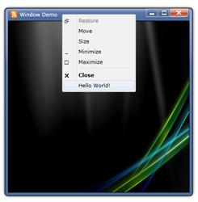

Custom items can be added in the Window title bar Context Menu using the event ContextMenuOpened.
|
C# |
|
void MainPage_Loaded(object sender, RoutedEventArgs e) { WindowDemo window = new WindowDemo(); window.ContextMenuOpened += new RoutedEventHandler(window_ContextMenuOpened); window.Show(); }
ContextMenuItemAdv item;
void window_ContextMenuOpened(object sender, RoutedEventArgs e) { ContextMenuAdv contextMenu = sender as ContextMenuAdv; if (contextMenu != null && !contextMenu.Items.Contains(item)) { item = new ContextMenuItemAdv(); item.Header = "Hello World!"; contextMenu.Items.Add(item); } } |

Figure 1126: Custom item added to Title Bar context menu.